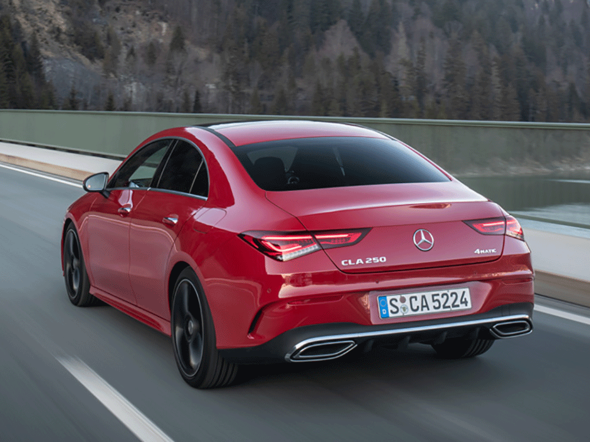

НАЗАД


от 2 590 000 руб.
Комплектации
| Комплектация | Цена*,руб. | Объем мотора, руб. | Тип топлива | Мотор, л.с. | КПП | Привод | Смеш. цикл,л (расход) | Расход до 100 км/ч, сек |
|---|---|---|---|---|---|---|---|---|
| CLA 200 DCT Sport | 2 590 000 | 1.3 | АИ-95 | 150 | робот | передный | 6,7 | 6,3 |
| CLA 250 4MATIC DCT Sport | 2 980 000 | 2.0 | АИ-95 | 244 | робот | 4х4 | 6.3 | 6.9 |
| CLA 35 AMG DCT 4MATIC | 3 720 000 | 2.0 | АИ-100 | 306 | робот | 4х4 | 7.3 | 4.9 |
| CLA 45 S AMG DCT 4MATIC | 4 750 000 | 2.0 | АИ-100 | 421 | робот | 4х4 | 8,2 | 4 |
Аннонимные отзывы владельцев
отличная динамика, стильный, мощные тормоза, хорошая управляемость, эталонная камера заднего вида,
отличный звук, передним пассажирам комфортно. при покупки широкая вариация набора опций
Динамичный и хорошо разгоняется, лёгок в управлении, отличная тормозная система к которой надо привыкнуть.
Есть много плюсов как в управлении, так и в электронике.
Автомобиль сам паркуется, круиз-контроль, предупреждение о столкновении, сам начинает тормозить, если есть опасность. Хорошая акустика.
Автомобиль для тех кому приходится много ездить, удобен. Вместительный багажник. Есть пространство под полкой багажника, где можно хранить нужный,
но не часто применяемый хлам. По расходникам и запчастям есть альтернативы оригинальные,
если обслуживать не у официалов. Низкий расход бензина.
отличная динамика, стильный, мощные тормоза, хорошая управляемость,
эталонная камера заднего вида, отличный звук, передним пассажирам комфортно.
при покупки широкая вариация набора опций